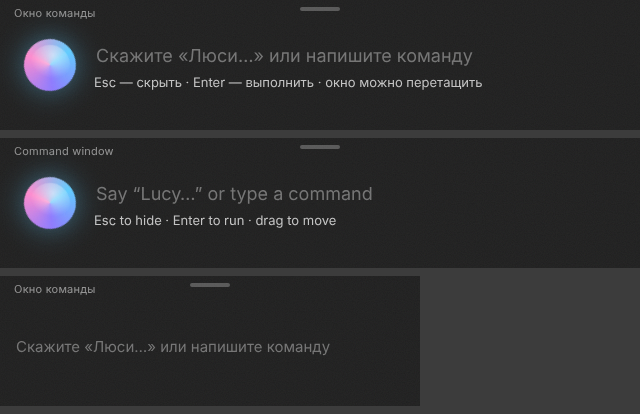
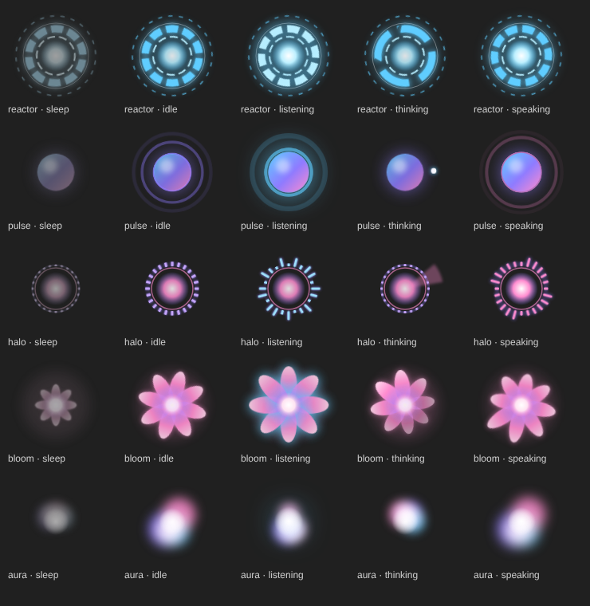
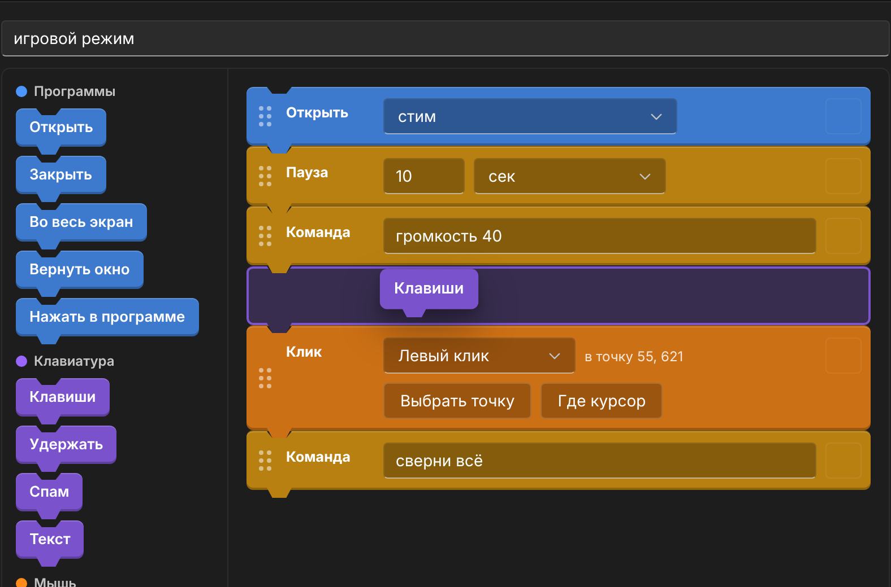

Говоришь — Lucy делает
Голосовой помощник для Windows, который слышит тебя даже в игре. Скажи «Люси» — и она откроет программу, убавит звук, нажмёт клавиши или ответит через ИИ. Распознавание работает без интернета.
Просто скажи
Lucy понимает живую речь, а не заученные фразы. Несколько примеров:
Люси, громкость игры 30звук игры тише, Discord как был
Люси, открой Дискордзапуск любой программы
Люси, сделай скриншотснимок экрана, не отрываясь от игры
Люси, таймер на 10 минутнапомнит голосом
Люси, какая погода завтра?карточка с прогнозом
Люси, запомни: купить хлебзаметка, прочитает по просьбе
Что умеет
Всё, что обычно делается мышкой через пять окон, — одной фразой.
Имя и команды распознаются прямо на твоём ПК. Голос никуда не уходит.
Голосовые макросы с профилями: сказал «щит» — нажаты клавиши. Звук, окна, OBS и Discord — не сворачивая игру.
Цепочка шагов на одну фразу: открыть, подождать, нажать, сменить звук, открыть ссылку.
Облачные модели по своему ключу или локальный ИИ прямо на ПК — без интернета.
Реактор, Цветок и другие облики показывают, что Lucy слушает, думает и отвечает.
Режим «Только свои голоса»: друг в Discord или чат стрима не выключат тебе игру.
Как выглядит
Настоящий интерфейс Lucy, без монтажа.




Системные требования
| Минимум | Рекомендуется | |
|---|---|---|
| Система | Windows 10 64-бит | Windows 11 |
| Процессор | 4 ядра | 6 ядер |
| Память | 4 ГБ | 8 ГБ (16 ГБ для локального ИИ) |
| Видеокарта | не обязательна | 4 ГБ — для локального ИИ |
| Место | 1 ГБ | 3 ГБ + модели ИИ по желанию |
| Звук | микрофон | гарнитура |
Вопросы
Нужен интернет?
Нет. Имя и команды Lucy слышит на самом ПК. Интернет нужен только для облачного ИИ, погоды и музыки из сервисов.
Какие языки?
Голосовые команды пока на русском, интерфейс — на русском и английском. Английские команды — в планах раннего доступа.
Не будет мешать играм?
В тишине Lucy почти не нагружает процессор, а видеокарта по умолчанию остаётся игре. Макросы в играх с античитом — проверяйте правила игры.
Куда уходят мои данные?
Голос остаётся на ПК. Подробно — в политике конфиденциальности.
Скоро в Steam
Ранний доступ в Steam. Блогерам и каналам — ключи для обзора в пресс-ките.